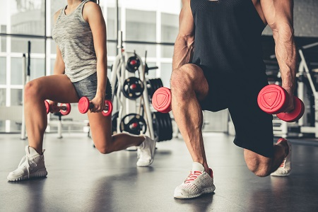
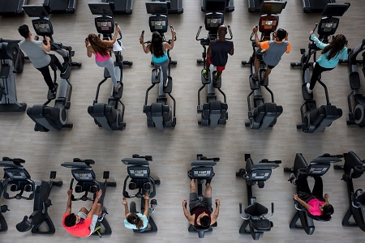

Weights

Our facility includes a weight training area qith several weight options. Build lean muscle with weights and improve your core with weigt training.
- Dumbbells
- Kettle Bells
- Barbells
Cardio

Burn fat through cardio workouts. Experts recommend 150 min of cardio each week. We have several equipiment choices for your workout.
- Treadmills
- Ellipitical Machines
- Exercise Bikes
Personal Training

Our certified personal trainers work with you to help you obtain your fitness goals and track your progress. Personal training has many benefits.
- Accountability
- Personalized Program
- consistent Support and Motivation
Common Exercises
The following are common exercises that we encourage our clients to do as part of their daily exercise routine.
- Burpee
- Plank
- Mountain Climbers
Burpees are a great, full body exercise to increase your strength and endurance. Bein in a standing position, drop into a squat and extend your hands forward, kick your feet back and then forward again quickly, and then jump up from a squatted position.
Planks build your core strength. To perform a plank, get in a push up position and rest your forearms on the floor. Hold the position as long as you can.
Mountain climbers are a good cardio exercise. Place your hands on the floor in a push up position, then bring one knee up to your chest and then switch as quickly as you can (as though you are climbing a mountain).
For more information about how to stay active, visit U.S. Department of health and Human Services.